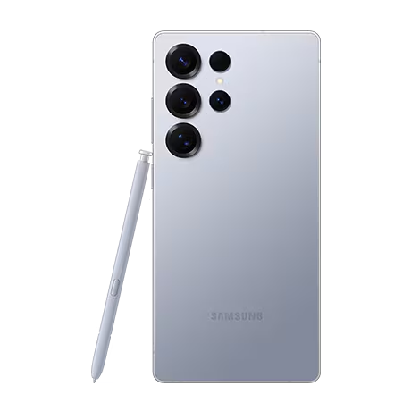

🍏 iOS: The Best Mobile Experience?

iOS is known for its sleek design, smooth user experience, and seamless integration with other Apple devices.
Apple prioritizes security and optimized performance, making it a great choice for those who value privacy and simplicity.
🤖 Android: More Customization, More Power?
Customization and Flexibility:Android allows for extensive customization, from home screen widgets and launchers to deep system-level tweaks. Users can personalize their devices to a much greater degree than on iOS. This flexibility extends to hardware choices, with a wide range of manufacturers and device types available.
Hardware Diversity and Affordability:The Android ecosystem boasts a vast selection of devices at various price points. This means users can find a phone that perfectly fits their needs and budget. From budget-friendly options to high-end flagships, Android offers something for everyone. Additionally, android devices often have features that apple products do not, such as expandable storage.
Openness and App Availability:Android's open-source nature allows for greater freedom in app development and distribution. Users can install apps from various sources, not just the Google Play Store. This openness also fosters innovation and provides access to a wider range of apps and features. Also, androids file management system is much more open, and easy to use.